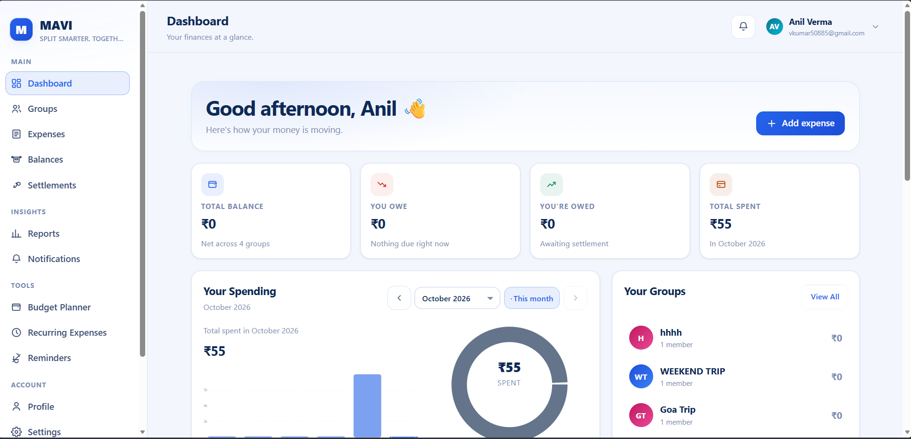
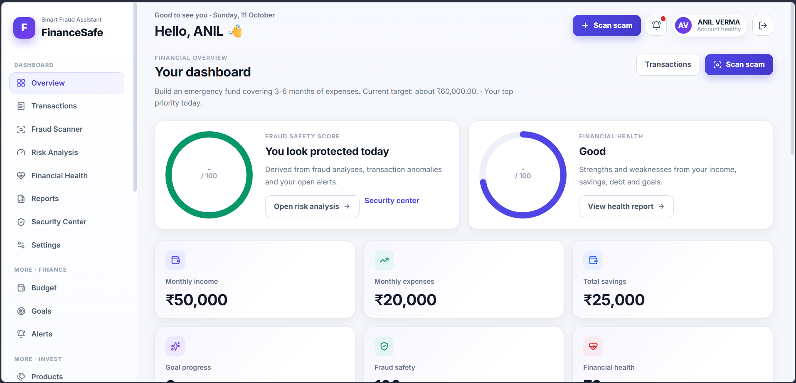
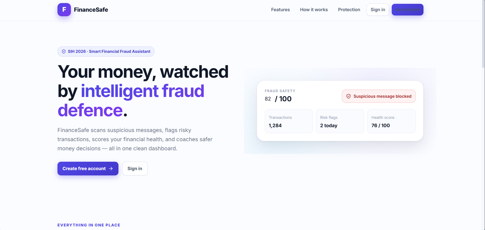
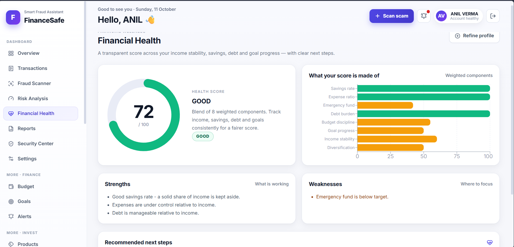
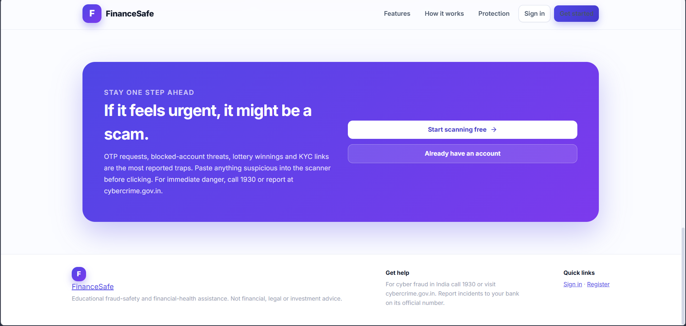
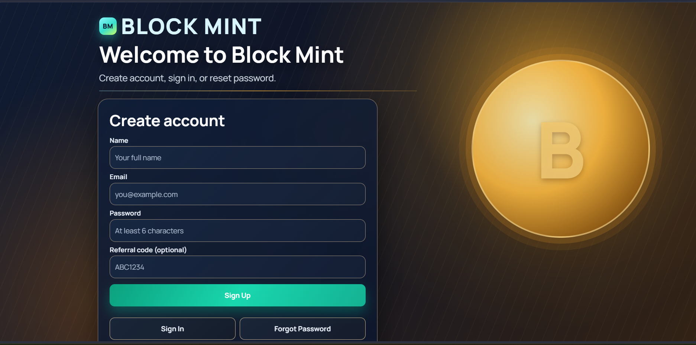

SELECTED WORK
Projects built around
practical ideas.
Three project case studies using screenshots captured from the live applications. Implementation details are limited to the confirmed scope and supplied project materials.
MAVI
A shared-expense web application for groups, expense splitting, balances, and settlements.

Project overview
MAVI focuses on shared expenses, group membership, splitting calculations, balances, and settlements. This summary is limited to the scope already confirmed.
Confirmed implementation scope
- Calculation logic and interface for all six expense-splitting methods.
- Manual checks and automated calculation tests for expense splitting.
- Frontend, backend API, and database integration.
FinanceSafe
A financial safety application combining scam-related checks with personal finance features.




Project overview
FinanceSafe brings scam-awareness checks together with personal finance features. The confirmed scope includes scam scanning and risk scoring, finance tracking, account security, and frontend/backend/database integration. The screenshots show the live landing page, dashboard, financial-health report, and safety guidance.
Confirmed implementation themes
- Scam detection and risk scoring.
- Authentication and security-related workflows.
- Manual checks and automated testing.
Block Mint
A simulation platform with account, dashboard, product, transaction, and admin workflows.

Project overview
The supplied source archive contains pages for sign-in, dashboard, deposits, profile, products, and administrative workflows, backed by a Node.js and Express server with MongoDB integration.
Content verification
- Inspect the supplied source archive and README.
- Confirm the current live demo and source destinations.
- Choose a genuine screenshot from the running application.